Website Tutorial
Overview
Platform Introduction
ImmunoFusion is an interactive web platform for exploring RNA-seq–derived gene fusions in cancer, with a focus on their associations with the tumor microenvironment (TME) and responses to immune checkpoint blockade (ICB). It integrates fusion calls from large treatment-naïve cohorts and multiple ICB cohorts, and links them to rich clinical and TME signatures.
The platform is designed to help you:
- Explore the pan-cancer landscape of RNA-derived gene fusions.
- Examine associations between fusions and TME, tumor-intrinsic, and metabolic signatures.
- Assess fusion co-occurrence/exclusivity and compare fusion-positive vs. fusion-negative groups.
- Investigate how specific fusions relate to survival outcomes in treatment-naïve and ICB-treated cohorts.
Please cite the ImmunoFusion paper if you use results from this platform in your work.
Data Overview
ImmunoFusion is the largest cancer fusion gene database, integrating 78 cohorts, 20,995 samples, and 98,281 fusion calls (76,803 unique Fusion IDs), including data from TCGA, TARGET, and CPTAC.
Core Data Metrics:
- Cohorts: 78 (28 ICB / 50 non-ICB)
- Samples: 20,995 (4,671 ICB / 16,324 non-ICB: 14,449 tumor, 68 cell models, 1,807 normal)
- Fusion calls: 98,281 records (12,750 ICB / 85,531 non-ICB); 76,803 unique Fusion IDs
- Genes: 23,565 (9,600+ ICB / 22,400+ non-ICB)
- Gene Pairs: 66,895 (10,200+ ICB / 57,800+ non-ICB)
The Data Summary module provides macro-level statistical views of cohorts and samples, including cohort characteristics (cancer type distribution, IO vs non-IO composition, sex ratio, treatment type and response distribution) and fusion profiles (fusion type and sample type distributions). Users can quickly grasp the overall dataset composition through this module.
Citation and Disclaimer
This platform is for research purposes only. It does not collect personal information. Clinical use is at your own risk.
Data Modules
Fusion Module
The Fusion module is the entry point for inspecting individual fusion events and their basic characteristics.
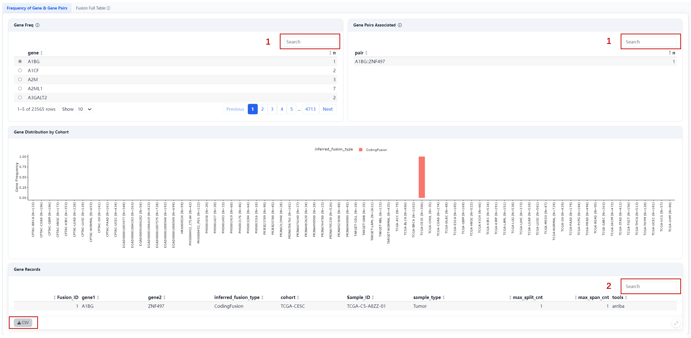
Steps:
- Select gene (optional) or gene pairs (optional);
- Filter by Gene, Sample_ID, Fusion_ID, etc.
Outputs:
- Browse specific fusions and view the distribution of different fusion types across the cohort in the middle panel;
- Download fusion summary tables as CSV files.
The Gene Freq and Gene Pairs Associated tables are a cached database-wide reference index and do not change with the global filters. The gene distribution, gene records, Fusion Full Table, and drill-down are recomputed from the globally filtered call set. n in the frequency index counts distinct fusion calls containing the gene or pair (a SameGene call is counted once).
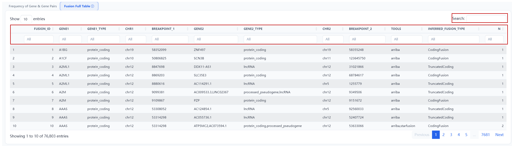
A searchable summary of all fusion events. Supports filtering by gene, fusion type, detection tool, etc.
Cohort Module
The Cohort module provides an overview of all cohorts and datasets in ImmunoFusion.
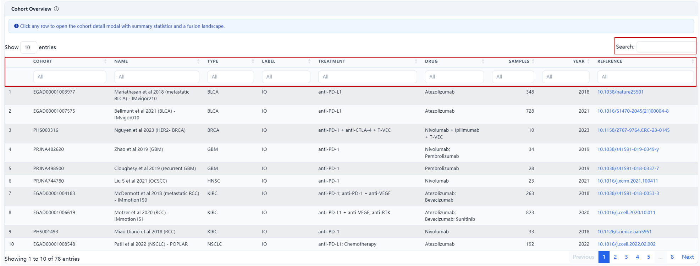
Displayed Fields: ID, name, cancer type, treatment/drug details, sample size, publication year/DOI, therapeutic label (e.g., IO), etc.
Operation: Search and filter the cohort list using the main search bar or individual column filters.
Cohort Details: Click any cohort row to open a detail modal with the following content:
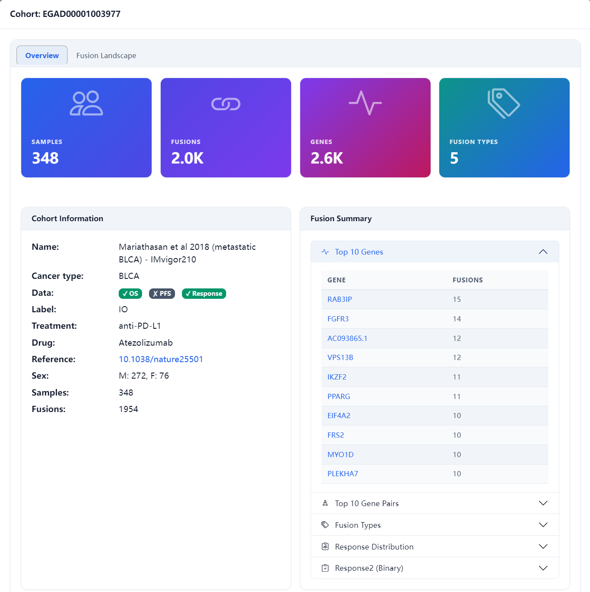
- Overview: sample size, total fusions, top fusion genes/gene pairs, fusion type distribution, and response distribution;
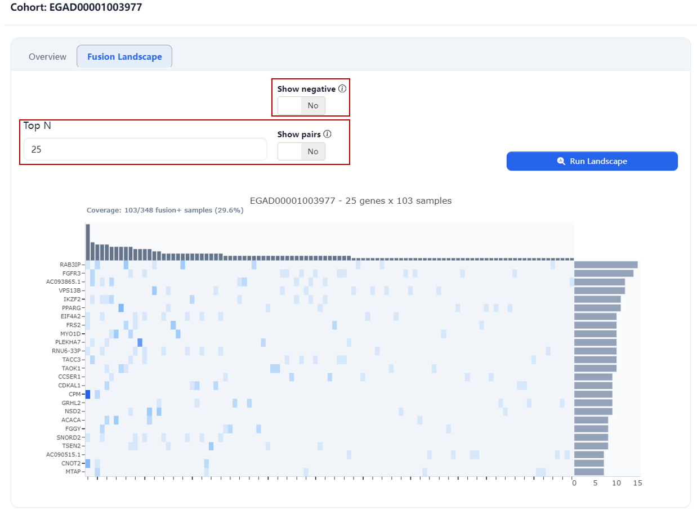
- Fusion Landscape: an OncoPrint of the cohort showing fusion event distribution across samples for the Top N genes or gene pairs (toggle “Show pairs”); coverage is reported relative to the analysed samples.
Analysis Modules
The Analysis module consists of several sub-modules, all sharing a unified layout: Analysis controls on the left (cohorts, genes, endpoints, signatures) and Results on the right (interactive plots with export options).
Export Options: All analysis modules support chart exports (HTML) and data exports (CSV). Export buttons are located in the results panel of each module.
Global Filters: The global filters (cohort groups/cohorts, ICB treatment status, pre-treatment status, sample type, fusion type, detection tool, Score, genes, Fusion IDs, and split/span thresholds) define the analysis population. A patient is Fusion+ when any of their samples carries at least one fusion passing all active filters. An empty selection is equivalent to selecting everything. Treatment-status filters apply within ICB cohorts only; non-ICB cohorts are unaffected. A compact context bar at the top of every filter-aware page summarizes the active selections (not the effective post-filter counts, which are reported in each panel). Home, Data Summary, and the Cohort overview describe the full database and are independent of these filters; the Fusion page’s gene/pair frequency index is also a database-wide reference, while its records, distribution, and tables are filter-aware.
Distribution
Evaluate the distribution characteristics of fusion genes across selected cohorts, generating fusion frequency plots, genome-wide breakpoint localization maps (Circos + Lollipop), and multi-dimensional composition charts. This module contains three sub-tabs: Frequency, Localization, and Composition.
Frequency
Display the distribution of fusion-gene/gene-pair frequencies across the selected cohort(s). Each histogram unit is one gene/pair in one cohort, counted as the number of unique samples carrying it in that cohort.
Steps:
- Select one or multiple cohort IDs and analysis type (Gene / Gene Pair);
- Select plot type:
- Fusion frequency: X-axis is the number of unique samples carrying the gene/pair in a cohort.
- Sample proportion: X-axis is that count divided by the number of clinical samples analysed in the cohort (not by fusion-positive samples).
- Optional: restrict to specific genes/pairs and/or mark one gene/pair;
- The marker draws a single red reference line at the marked target’s highest per-cohort value; the peak cohort and observed range are shown beneath the plot. This avoids drawing one line per cohort.
- Click Run.
Outputs:
- Frequency histogram: Y-axis is the number of gene/pair–cohort units in each frequency bin; bars are drawn on a log10 scale from 1 upward;
- Marker note: peak cohort and range for the marked target;
- Data table:
Gene/Pair,Cohort, andSamples(frequency mode) orProportion(sample-proportion mode); downloadable as CSV.
All three Distribution panels (Frequency, Localization, Composition) recompute on Run from the globally filtered call set; no cached distribution is displayed. Page-level cohort and gene selectors narrow the data further.
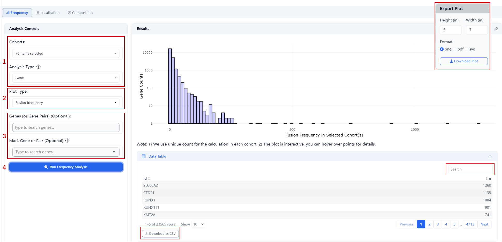
Localization
Display genome-wide distribution of fusion breakpoints. Includes two visualization views:
Ideogram
Show genome-wide fusion breakpoint density.
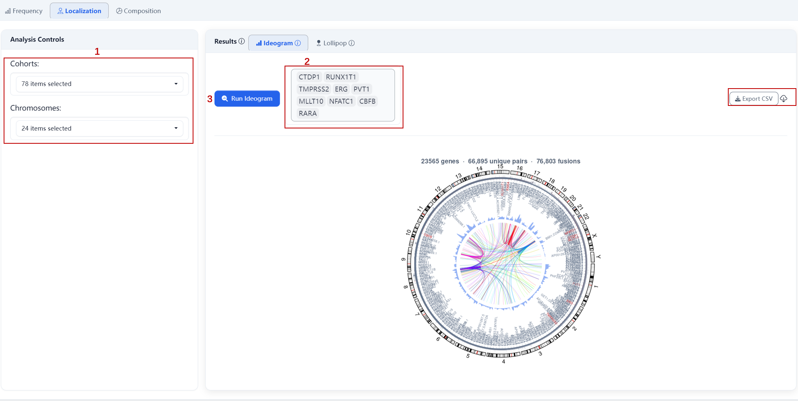
Steps:- Select cohorts (and optionally filter by chromosomes, all 24 by default);
- Optional: mark specific genes to overlay fusion partner links;
- Click Run.
Outputs:
- Circos plot: blue heatmap indicates breakpoint density; overlaid links show fusion partners for marked genes;
- Data source: filtered fusion calls aggregated by chromosome position.
Lollipop
ProteinPaint-style single-gene view showing fusion breakpoint distribution within a specific gene.
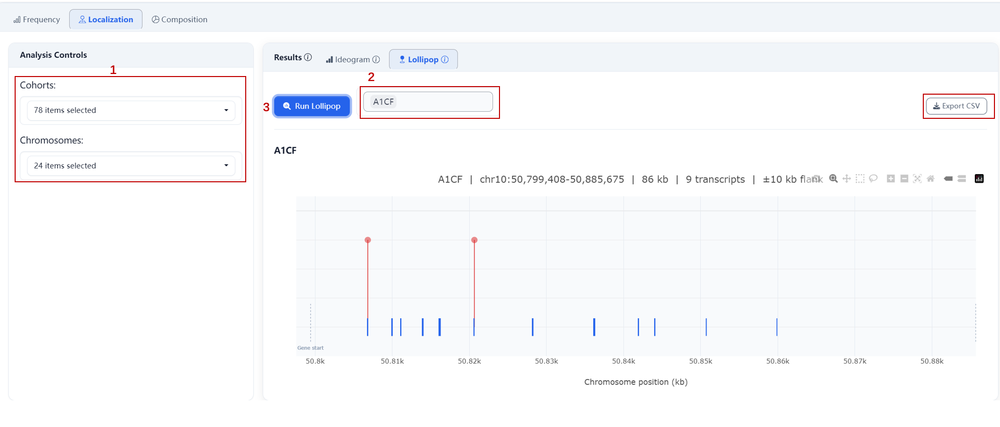
Steps:
- Select cohorts (and optionally filter by chromosomes, all 24 by default);
- Select target gene name;
- Click Run.
Outputs:
- Gene structure diagram: blue rectangles represent CDS/exons (HG38 BED-based);
- Red circles: intragenic fusion breakpoints; circle size scales with breakpoint count;
- Orange markers: regulatory/distal breakpoints (flanking ±10% gene length);
- Hover for breakpoint details.
Composition
Display the categorical breakdown of fusion events across multiple dimensions.
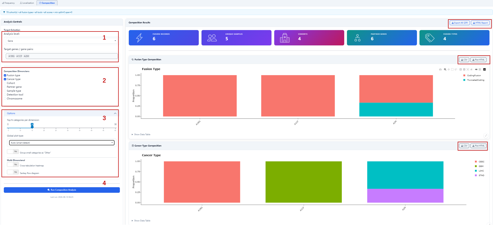
Steps:
- Select analysis level (Gene/ Gene Pair) and target genes/gene pairs (e.g., A1BG, A1CF, A2M);
- Select composition dimensions: Fusion Type, Cancer Type, Cohort, Partner Gene, Sample Type, Detection Tool, Chromosome (multiple selection allowed);
- Adjust optional parameters:
- Top N categories per dimension;
- Global plot type: Auto, stacked/horizontal bar, Donut/Sunburst, dot, heatmap, or treemap; group small categories as “Other”;
- Multi-Dimensional: enable cross-tabulation heatmap or a target → first-dimension flow diagram;
- Click Run Composition Analysis.
Outputs:
- Composition charts: fusion-event breakdowns across selected dimensions; each series represents a target gene/pair, with color-coded category proportions (e.g., fusion types);
- Per-target counts treat each selected gene independently (a call carrying two selected genes counts once for each), and comma-separated gene lists are expanded so
A,B::Ccontributes to bothA::CandB::C; - Optional multi-dimensional views: cross-tabulation heatmap or flow diagram (target → first selected dimension).
Comparison
Evaluate associations between fusion events and tumor microenvironment (TME) or IOBR immune signatures, generating box plots comparing feature scores between Fusion+ and Fusion− groups along with statistical test p-values.
This module offers two analysis modes:
- TME: compare cell-type abundance by fusion status;
- IOBR Signature: compare immune signature scores by fusion status.
The comparison unit can be Samples or Patients. In sample mode, every sample is a data point and Fusion+ is defined by the globally filtered call set (a sample is Fusion+ when it carries at least one fusion passing all active filters); multiple samples from one patient are not independent. In patient mode, the selected feature is averaged across each patient’s samples and a patient is Fusion+ when any sample is Fusion+; this removes within-patient pseudoreplication. Each feature needs at least two non-missing observations in both fusion groups; otherwise the panel reports that the feature is not testable.
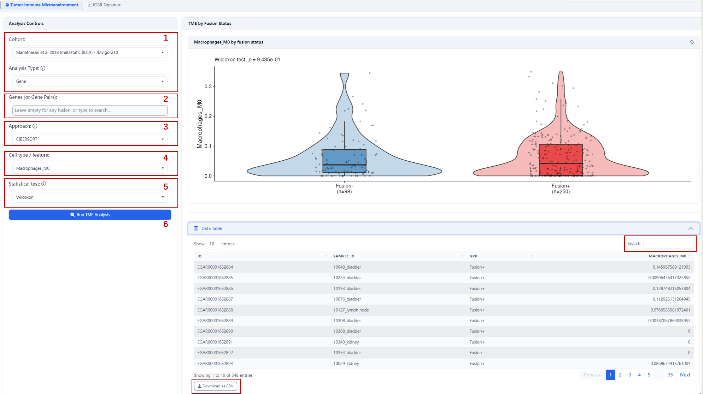
Steps:
- Select target cohort and analysis type (Gene / Gene Pair);
- Enter target gene/gene pair name(s) (leave empty to use all detected fusions);
- Select analysis approach
- Select cell type / feature (e.g., Macrophages_M0, APM);
- Select statistical test (e.g., Wilcoxon);
- Click Run.
Outputs:
- Box plot: displays feature abundance distribution between Fusion+ and Fusion− groups;
- Statistical results: Wilcoxon test p-value indicating significance between groups;
- Data table: includes sample ID, group label, and feature values; supports search and pagination.
Association
Explore associations between gene fusions and molecular features, clinical response, and pairwise gene-fusion co-occurrence. This module contains three sub-tabs: Correlation, Response, and Gene Co-occurrence. Correlation, Response, and Gene Co-occurrence use the patient as the analysis unit (a patient is Fusion+ when any of their samples carries the relevant fusion), whereas the TME/Signature comparison above uses samples.
Correlation
Evaluate the correlation between fusion count and TME/signature features at the patient level.
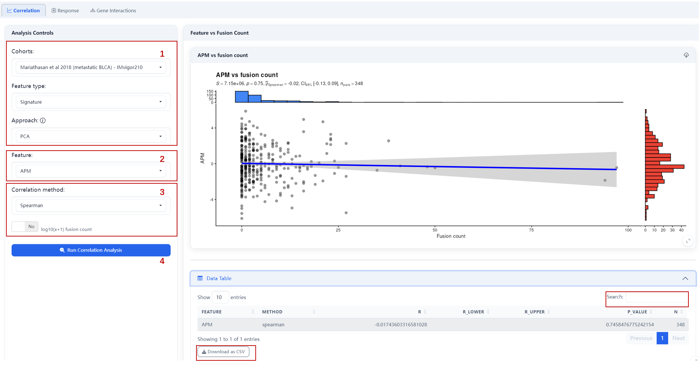
Steps:- Select target cohort, feature type (Signature/ TME), analysis approach (e.g., PCA);
- Select specific feature (e.g., APM);
- Select correlation method (e.g., Spearman) and choose whether to apply log10(x+1) transformation to fusion count;
- Click Run Correlation Analysis.
Outputs:
- Scatter plot: shows relationship between feature scores and fusion count with fitted trend line;
- Statistics: Spearman correlation coefficient (ρ), 95% CI, and p-value.
Response
Evaluate associations between fusion status and clinical response, reported as two complementary analyses:
- Binary response (Response2: pre-treatment Pre-R vs Pre-NR): uses the harmonised
Response2variable restricted to pre-treatment samples (Pre-RvsPre-NR). The heading and analysis explicitly state this restriction. The reported odds ratio is the response odds ratio for Fusion+ vs Fusion- samples: OR > 1 means higher response odds in Fusion+ samples. - RECIST response: only samples with RECIST-coded values (
CR,PR,SD,PD) are analysed;CR/PRare responders andSD/PDare non-responders. NE and non-RECIST labels (e.g.,R/NR,CB/NCB,Responder/Non-responders) are excluded and reported as unevaluable; use the binary analysis for those cohorts. If only one RECIST class remains, the panel says so instead of reporting a misleading 0/NA test.
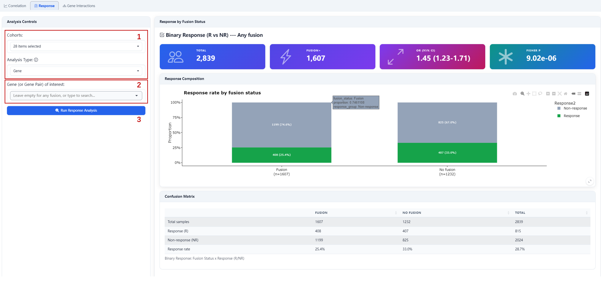
Steps:
- Select one or multiple cohorts and analysis type (Gene/ Gene Pair);
- Enter target gene/gene pair(s) (leave empty to use any fusion as Fusion+);
- Click Run Response Analysis.
Outputs:
- Binary response: response-rate composition, confusion matrix, response odds ratio (Fusion+ vs Fusion-) with 95% CI, and Fisher’s exact test p-value for pre-treatment
Pre-RvsPre-NR; - RECIST response: response composition and contingency table for RECIST-coded samples only, with Fisher’s exact p-value; non-RECIST/NE records are excluded and the exclusion rule is shown in the panel.
Gene Co-occurrence
Detect statistical co-occurrence or mutual exclusivity between gene-fusion events across patients. This is an association test, not evidence of physical or functional gene–gene interaction.
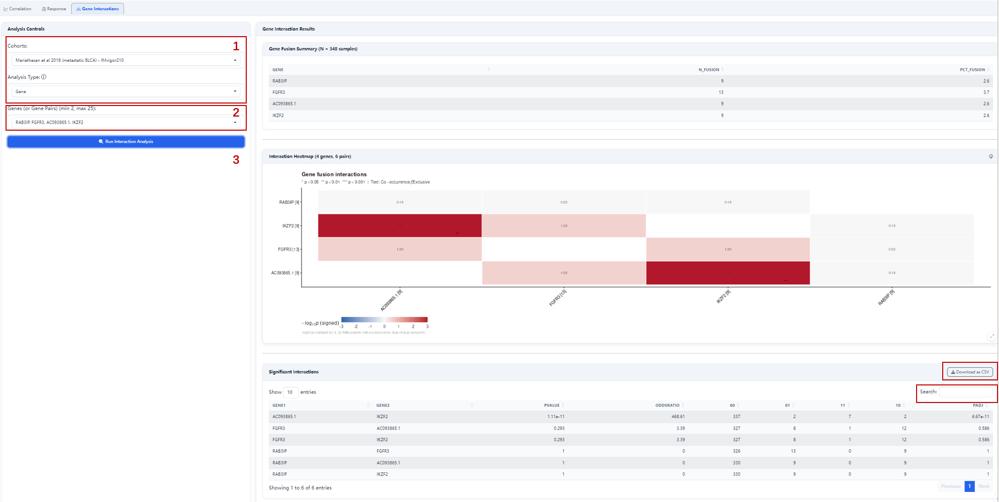
Steps:- Select target cohort and analysis type (Gene / Gene Pair);
- Enter target genes/gene pairs (min 2, max 25);
- Click Run Co-occurrence Analysis.
Outputs:
- Co-occurrence/mutual exclusivity heatmap: shows association patterns between gene pairs; stars are based on raw p-values, while the table reports FDR-adjusted values;
- Significant Co-occurrences table and CSV: only pairs with FDR < 0.05 (the header reports how many of all pairs are significant);
- Statistics: raw p-values, odds ratios (OR), and FDR-adjusted p-values for each gene pair.
Survival (KM)
Evaluate the association between gene fusion status and patient survival by generating and comparing Kaplan-Meier survival curves between Fusion+ and Fusion− groups. The analysis unit is the patient: multi-sample patients contribute one record, and a fusion on any sample marks the patient as Fusion+. When a patient has multiple clinical records, record selection prioritizes an event for the endpoint being analysed and then longer follow-up for that endpoint, so an OS event cannot displace a PFS progression record. Survival time units are inferred from each cohort’s data rather than assumed from cohort type: months are used only when both the median and maximum observed OS time are below 150; otherwise the day scale is used.
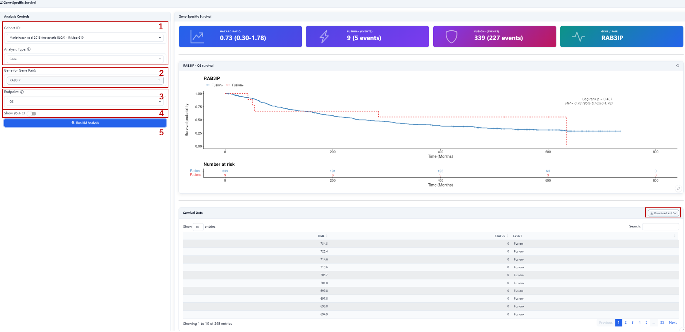
Steps:- Select target cohort and analysis type (Gene / Gene Pair);
- Enter target gene/gene pair name (defines Fusion+ vs Fusion− grouping);
- Select survival endpoint (e.g., OS);
- Optional: check Show 95% CI to display confidence intervals;
- Click Run KM Analysis.
Outputs:
- KM survival curves: show survival probability over time for both groups;
- Log-rank test p-value: indicates whether survival curves differ significantly;
- Hazard ratio (HR) with 95% confidence interval. If one group has zero events, the HR is reported as not estimable while the KM curves and log-rank test are still shown;
- Survival data table: includes time and event status; supports search and pagination.
Cox Regression
Evaluate the independent prognostic value of gene fusions using multivariable Cox proportional hazards regression, with optional adjustment for clinical covariates. The analysis unit is the patient, consistent with the KM analysis. Genes with fewer than two fusion-positive patients are dropped with a visible warning rather than modelled silently; FDR-adjusted values are used consistently in the table, forest-plot colors, and CSV export.
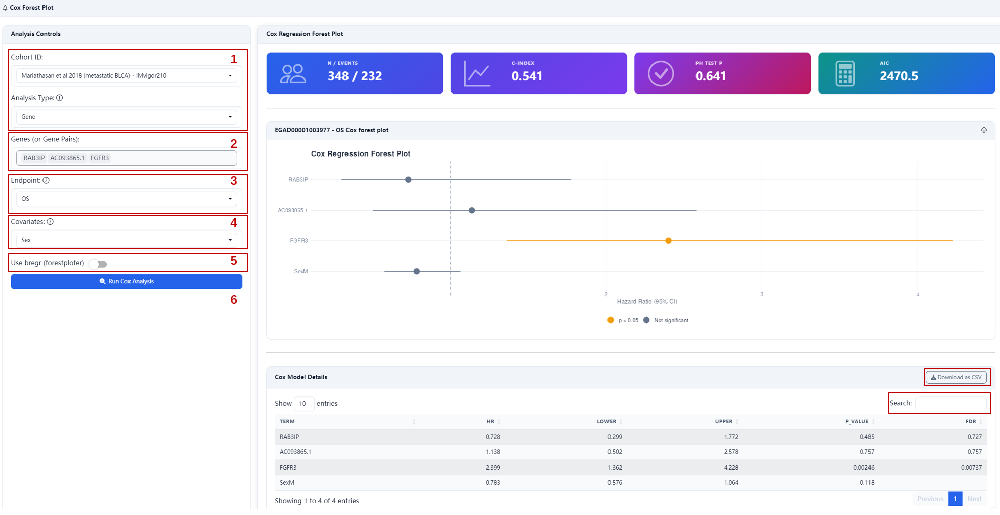
Steps:- Select target cohort and analysis type (Gene / Gene Pair);
- Select target gene/gene pair names (multiple allowed);
- Select survival endpoint (e.g., OS);
- Select clinical covariates (e.g., Sex);
- Optional: check Use breg (forestplotter) to enable the dedicated forest plot rendering engine.
- Click Run Cox Analysis.
Outputs:
- Forest plot: displays hazard ratios (HR) and 95% CI for each fusion gene and covariate;
- Model summary statistics:
- C-index: model discriminative ability (0.5 = random, >0.7 = acceptable);
- PH test p: proportional hazards assumption test (>0.05 indicates assumption holds);
- AIC: model fit quality indicator;
- Detailed results table: includes HR, 95% CI, p-values, and FDR-adjusted values for each variable.
Landscape
Visualize the fusion landscape within a single cohort as an OncoPrint. Each column represents a sample; each row represents a gene or gene pair. Colored rectangles indicate detected fusion types. The sample universe and alterations respect the active global filters, and comma-separated gene lists are expanded into individual gene pairs. Labels switch between “Genes” and “Gene Pairs” with the selected analysis level; “Samples Shown” is the number of non-empty columns, and coverage is shown relative to the analysed sample universe.
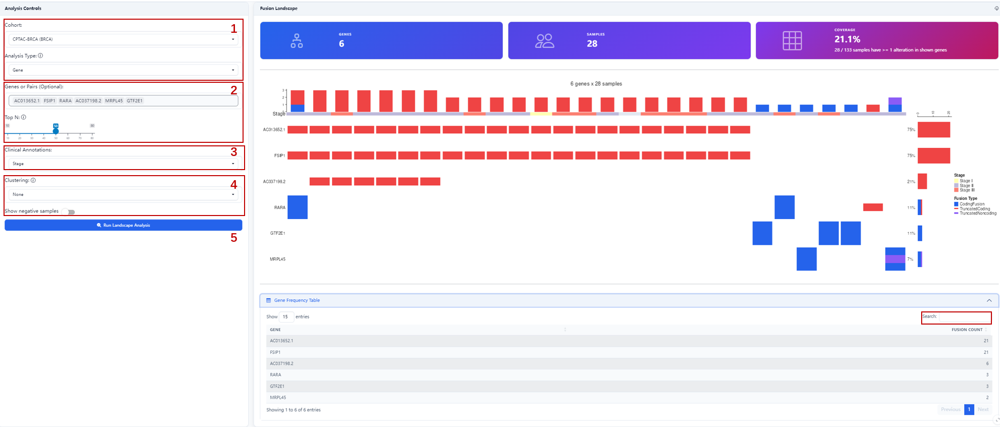
Steps:
- Select target cohort and analysis type (Gene / Gene Pair);
- Enter target gene/gene pair names (optional), or set Top N to display the top fusion-frequency genes (leave empty for auto-detection).
- Select clinical annotation covariates (e.g., Stage) for sample-level annotation bars;
- Optionally select a clustering method (None / Samples only / Genes only / Both axes) and toggle whether to include samples without fusions (Show negative samples).
- Click Run Landscape Analysis.
Outputs:
- OncoPrint main plot: shows fusion event distribution for each gene across samples;
- Top annotation bars: display selected clinical covariates (e.g., Stage);
- Side bar: shows fusion frequency per gene;
- Bottom bar: shows total alterations per sample;
- Gene/pair frequency table: lists fusion counts for each gene or gene pair; supports search and pagination.